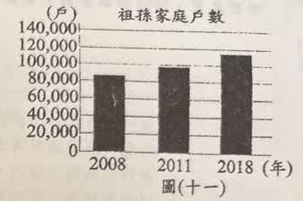
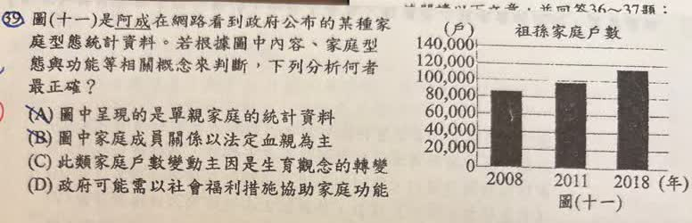

分享原卷｜第39題
完整原題

圖（十一）是阿成在網路看到政府公布的某種家庭型態統計資料。若根據圖中內容、家庭型態與功能等相關概念判斷，下列分析何者最正確？
(A) 圖中呈現的是單親家庭的統計資料
(B) 圖中家庭成員關係以法定血親為主
(C) 此類家庭戶數變動主因是生育觀念的轉變
(D) 政府可能需以社會福利措施協助家庭功能
先想一想，再查看答案、解說與原圖
原卷作答：C；紅筆訂正D
正確答案：D，政府可能需以社會福利措施協助家庭功能。
逐項解析
| 選項與原句 | 判讀 | 句意與判斷理由 |
|---|---|---|
| (A) 圖中呈現的是單親家庭的統計資料 | 不選 | 標題明示祖孫家庭，不能換成單親家庭。 |
| (B) 圖中家庭成員關係以法定血親為主 | 不選 | 圖表不支持以法定血親為主的說法。 |
| (C) 此類家庭戶數變動主因是生育觀念的轉變 | 不選 | 只有戶數變化，無法由此認定生育觀念是主因。 |
| (D) 政府可能需以社會福利措施協助家庭功能 | 應選 | 依家庭的實際需求提供福利支持，可協助家庭功能。 |
詳細說明與解題步驟
【先確認統計對象】
圖標題是「祖孫家庭戶數」，統計對象不是單親家庭。三根柱呈現2008、2011、2018三個年份，後一個觀測年的戶數較前一個觀測年多。
圖上沒有每一年的數據，不能把三個觀測點寫成「逐年持續增加」，也不必從柱高臆測精確戶數。
【為什麼選D】
祖孫家庭可能面臨經濟、教養或照顧等需求，政府可以用社會福利措施協助家庭功能。D使用「可能」，符合依需要提供支持的意思，不表示每一個祖孫家庭都必然功能不足。
【其他三項】
A：圖中是祖孫家庭，不是單親家庭。
B：祖父母與孫子女常以自然血親連結，不能從圖中判定以收養等法定血親為主。「直系」是世代關係的分類，「自然／法定」是血親形成方式的分類，兩者不是互相排斥的概念。
C：圖表只有戶數，沒有調查增加的原因，不能推出主因是生育觀念轉變。
【來源AI解說的限制】
原AI直接以父母外出工作、離婚或家庭變故說明增加主因，這些可能是個別家庭的情況，但本圖沒有因果資料，不能據此認定統計變化的主因。此題重點是辨識家庭型態、讀懂圖表能支持的範圍，再選出合宜的政策方向。
核對註記：已依原卷或完整文字核對並獨立解題；對應教材課次未確認，歸綜合。
原圖（僅本題）
